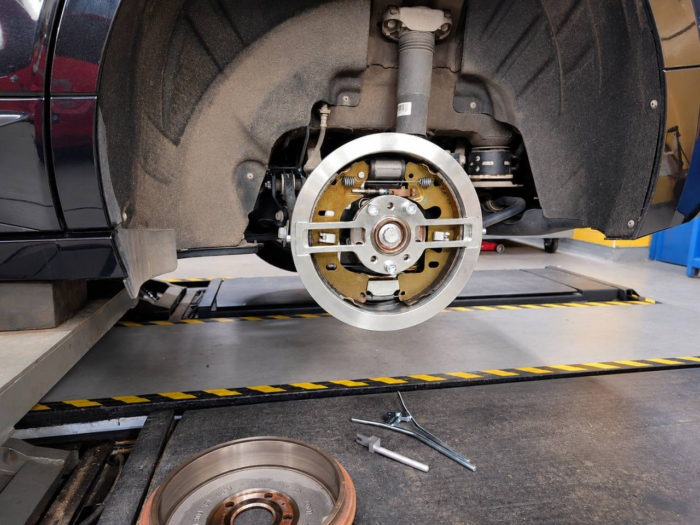
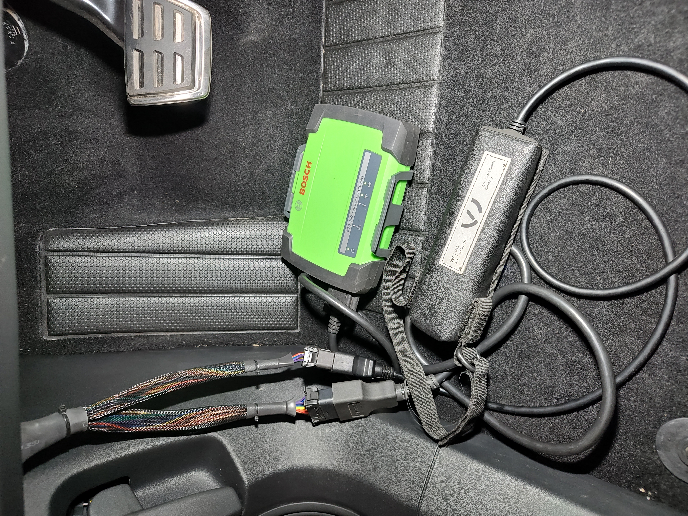

Rear drum brakes of electric cars - expert inspection and precise adjustment.
Škoda Enyaq, Volkswagen ID.3, ID.4, ID.5, ID. Buzz and other electric cars of the Volkswagen Group equipped with rear drum brakes.
Inspection, maintenance and basic adjustment of the brake mechanism according to the service documentation of the specific vehicle. Adjustment is not automatically a mandatory part of every regular service inspection.

Why do the rear drum brakes of electric cars require special attention?
Electric cars make extensive use of energy recovery when decelerating. The electric motor thus takes over part of the braking work, and the mechanical brakes can be used less often during normal operation.
This contributes to lower brake lining wear, but at the same time creates specific requirements for checking and maintaining the brake system.
Although the closed construction of drum brakes provides protection against external influences, problems with the function of mechanical brakes can occur when moisture penetrates, corrosion, long-term shutdown or limited use.
Possible manifestations are corrosion of the working surfaces of the brake drums, corrosion or grinding of the brake shoes, limited mobility of the adjustment mechanism or unwanted braking.
Therefore, low brake lining wear does not necessarily mean perfect technical condition of the rear brakes.
Inspection and professional maintenance
During the professional inspection of rear drum brakes, we pay attention to the condition of the working surfaces of the drums, brake shoes, return springs, automatic adjustment mechanism and the mobility of individual components.
We also focus on possible signs of corrosion, rubbing, sticking and unwanted braking resistance.
The correct technical condition of the brake mechanism is important for the reliable function of both the service and electromechanical parking brakes.
Precise adjustment using a special tool T10635
We use a special service tool of the T10635 series for service interventions requiring the prescribed basic adjustment of the brake shoes.
The product enables accurate setting of the starting position of the brake shoes through an automatic adjustment mechanism according to the relevant service procedure of the manufacturer.
The correct setting helps ensure the desired function of the rear brakes and reduces the risk of unwanted braking or damage to the brake mechanism.
Possible permanent braking resistance can increase the consumption of electricity and adversely affect the range of the electric car.
Corresponding variants of the T10635 tool are used for individual models and designs of rear brakes. The specific procedure is always governed by the relevant service documentation.
Original diagnostics ODIS when replacing the lining
When replacing the lining of the rear drum brakes, we compared the range of service functions of the professional multi-brand Bosch KTS 560 / ESI[tronic] diagnostics and the original ODIS Service diagnostics on a particular Škoda Enyaq car. We focused on the control of the parking brake and subsequent control procedures.

The difference captured in the diagnostics
The Bosch menu featured parking brake deactivation for lining replacement and parking brake activation after lining replacement.
ODIS had a separate item "Parking brake basic settings (function check)" in the controlled functions menu. At the same time, the program "Replacement of the brake lining" indicated the return of the left and right drives to normal mode and the subsequent "Check of the function of the brake system".
In the intercepted Bosch bids, a separate item corresponding to this control was not listed. However, this in itself does not prove that a similar action is not part of another ESI[tronic] function, for example the activation of the parking brake after replacing the lining.
Two drives, two control units
According to the displayed information ODIS, for the test vehicle, the left parking brake motor V282 is controlled by the ABS unit J104, while the right motor V283 is controlled by the brake booster unit J539. The program ODIS explicitly calls attention to this division and shows the implementation in two steps.
When assessing the scope of the service function, it is therefore necessary to take into account the work with both drives and the continuity of the individual steps. The name "parking brake activation" alone does not describe the entire content of the diagnostic procedure.
What equipment do we use at J&S SERVIS
In addition to professional multi-brand diagnostics, we have ODIS Service with online access to the manufacturer's systems available to service the vehicles of the Volkswagen Group concern. For a specific vehicle, we can therefore use the appropriate controlled functions and test programs ODIS.
We choose the service procedure according to the documentation for the given vehicle and the intervention being carried out. Diagnostic operations complement the mechanical part of the repair; their scope and result cannot be judged only by the number of items in the menu.
Final note
The comparison describes the bids captured in a particular test. It does not represent a complete overview of Bosch support or proof of the exclusive availability of said operation in ODIS. The range of functions may vary depending on the vehicle variant, the identification of the control units and the versions of the diagnostic software and data.
J&S SERVIS specialised service
When servicing modern electric cars of the Volkswagen Group, we use appropriate special tools, diagnostic equipment and service procedures of the manufacturer.
We pay special attention to the rear drum brakes even when their brake linings do not show significant wear.